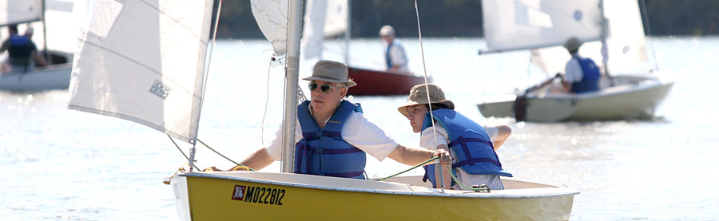

CCSA members have been sailing at Creve Coeur Lake for more than thirty years. With more than seventy members, our primary focus is on racing, improving sailing skills and bringing new sailors into the sport. Unlike other racing clubs, we emphasize having fun and keeping the events relaxed and open to everyone. While we use the formal Rules Of Racing, there are no protest committees. Disagreements on the race course are viewed as learning opportunities.
The relaxed atmosphere does not mean a lack of competition or a scarcity of highly skilled skippers. Some of the best sailors in the area belong to CCSA, and often win their share of awards in regional races.
Typically, prospective members come to the lake on race day. If you have a boat, you get a few instructions on the course from the Race Committee, told how to start, and then encouraged to get out there and sail. What’s the worst that could happen - you finish at the back of the pack? You will have company back there and after all, that’s where most of our members started. If you don’t have a boat, then sign up at the Race Committee tent to “crew” on member’s boats. Many of the boats we sail require two or more sailors to handle the boat.
CCSA is obviously not a yacht club. Our lake is small and located in a public park. We are dependant on the St. Louis County Parks Department for access to their facilities. All of our events must be coordinated with the county and officially “sanctioned”. We are allowed to rope off our parking area, set up Race Committee Tents, and park a few cars and trailers near the beach. The county also allows us to have a small power boat as a safety and marks boat. Nothing fancy, but it works surprisingly well.
Here are some of CCSA’s advantages:
- The closest lake to the center of the St. Louis area. You can drop by for the races after church on Sunday and still be home before dark.
- No facilities of our own to buy or maintain mean very low membership fees.
- We have our own boat storage near the lake at very low rates for members who participate in our events.
- A small lake is a “rubber room” for learning to sail and CCSA can provide support and a relaxed learning environment to help you get into the sport and then steadily improve your skills.
CCSA is a diverse and open group of new and experienced sailors. Whether you have been sailing for years or are just checking sailing out - come join us!
CCSA Officers And Board Of Directors
Contact Us
Website Credits
Webmaster: Bryan Gill & Dan Gill
Web Design: Sherri Giacalone
Photography: Dan Gill